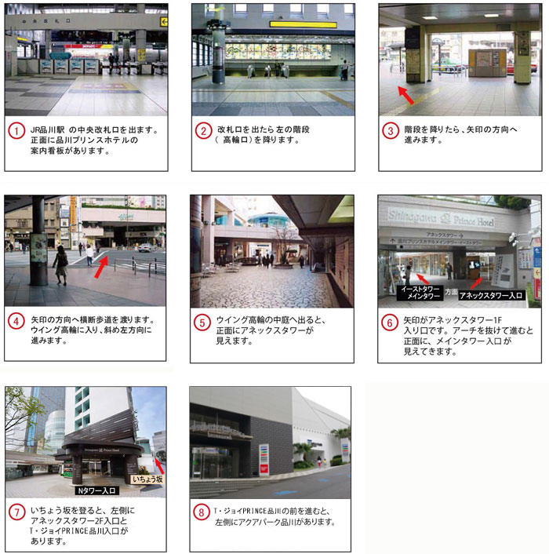

品川プリンスホテル Nタワー
ACCESS アクセス
国内外の玄関口・品川駅徒歩2分。
「N」タワーが実現する、場所と時間に縛られない自由なアクティブワーカーのための会社・自宅に続く“3rdプレイス”。
- 住所
- 〒108-8611 東京都港区高輪4-10-30
- お問合せ
- TEL:03-3440-1111 FAX:03-3441-7092
- 電車でのアクセス
- 【最寄駅より】
・新幹線・JR線・京急線の品川駅(高輪口)徒歩約2分。
・京急線 羽田空港国内線ターミナル駅から最速14分、国際線ターミナル駅から最速11分。
【主要駅までの所要時間】
・東京国際空港＜羽田空港＞へは京急線で25分
・横浜駅へは京急線で17分
・元町、中華街へはみなとみらい線で36分
・東京駅へはJR線で11分
・渋谷駅へはJR線で13分
・新宿駅へはJR線で20分
・築地市場へは京急線大門駅で都営大江戸線へ乗り換えで17分
・浅草駅へは都営浅草線で22分
・押上駅へは都営浅草線で26分
・舞浜駅へはJR山手線東京駅で京葉線へ乗り換えで40分
※主要駅までの所要時間は目安となりますのでご了承ください。
- 新幹線でのアクセス
-
・名古屋―品川間 最速94分
・新大阪―品川間 最速146分

- 車でのアクセス
- ・羽田空港から約30分。・東京シティエアターミナル（箱崎）から約20分。東京駅から約20分。
・JR線、モノレールの浜松町から約10分。・銀座から約15分。
【五反田出口よりホテル】首都高速中央環状線
高速を降りたら山手通りを直進。西五反田1丁目を左折（桜田通りへ）。
高輪台を斜め前方右方向高輪三丁目を右折。
2つ目の信号を右折。
【目黒出口よりホテル】首都高速2号目黒ランプ
高速を降りたら左折、目黒通りに出る。5つ目の信号を右折（八芳園角）。そのまま進行、第一京浜に出たら右折。
品川駅前よりホテル前を通過し1つ目の信号でUターンしホテル入口へ。
【芝公園出口よりホテル】首都高速都心環状線内回り
出口信号右折、1つ目信号右折、しばらく直進、第一京浜を右折しそのまま直進、
品川駅前よりホテル前を通過し1つ目の信号でUターンしホテル入口へ。
【芝公園出口よりホテル】首都高速都心環状線外回り
高速を降りたら左折、2つ目信号右折、しばらく直進、第一京浜を右折しそのまま直進、
品川駅前よりホテル前を通過し1つ目の信号でUターンしホテル入口へ。
【大井南出口よりホテル】首都高速湾岸線東行き
高速を降りしばらく直進、左手に品川方面標識有り、標識を道なりに左折、右折し
しばらく直進2つ目の信号を左折（五反田方面）、第一京浜を右折しそのまま直進。
【五反田出口よりホテル】首都高【大井出口よりホテル】首都高速湾岸線西行き
高速を降り400メートル直進、右手に品川方面標識有り、標識を右折しその先道なりに右折し
しばらく直進2つ目の信号を左折（五反田方面）、第一京浜を右折しそのまま直進。
- 駐車場のご案内
-
一般料金 ･･･････････････････････････ （30分) ￥500
ホテルご利用のお客さまご宿泊 ･･･････ 1泊（24時間・1台）￥1,500
ご宴会 ･････････････････････････････ 4時間まで無料
館内施設 ご利用金額合計
￥5,000以上ご利用のお客さま ･･･････ 3時間まで無料
（レストラン・シネマ・テナント・アクアパーク品川・ボウリング）
駐車場のご利用方法について
※ 超過した場合、別途「駐車料金」をいただきます。
※ ステラボール、コンビニエンスショップは対象外となります。
SEIBU PRINCE CLUB会員限定の
お得な料金をご用意いたしました。
会員登録でプリンスホテルの宿泊プランが
ベストレートでご利用いただけます。
| プリンスホテル TOP | 品川プリンスホテル TOP |